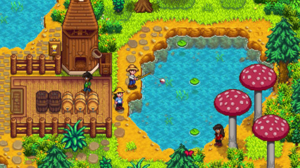
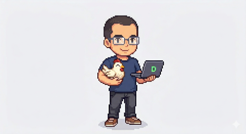
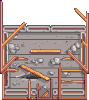
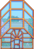
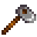
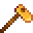

Olá mundo!
Estou desenvolvendo esse projeto no intuito de documentar minha jornada de aprendizado
O estabelecimento de um repositório de conhecimento pessoal, como o Diário DEV, vai além da simples prática de anotações; ele se configura como uma estratégia de engenharia cognitiva destinada a consolidar a transição de um estudante de programação para um profissional de alta performance.
No ecossistema contemporâneo do desenvolvimento frontend, a fragmentação da informação e a dependência excessiva de tutoriais mecânicos constituem os principais obstáculos para a maestria técnica. Esse projeto surge, portanto, como uma ferramenta de "aprendizado ativo", onde o ato de documentar e explicar conceitos complexos força a organização mental e a identificação de lacunas no entendimento, um processo vital para quem busca não apenas codificar, mas compreender os fundamentos que regem a web.
A estruturação desta plataforma deve refletir a "Tríade do Frontend" — HTML, CSS e JavaScript — estabelecendo conexões profundas entre a estrutura, a apresentação e a lógica comportamental.
Este relatório detalha a fundamentação técnica necessária para a inauguração do Diário DEV, abordando a tipologia de arquivos, a anatomia dos documentos HTML, o modelo de caixas e a arquitetura semântica, integrando esses conceitos a uma visão de longo prazo para a carreira do desenvolvedor.
A Filosofia do Diário DEV: Documentação como Ativo Profissional
O propósito fundamental do Diário DEV é mitigar o fenômeno do "conhecimento raso". Ao transformar o aprendizado em uma narrativa pública, o autor do blog utiliza a técnica de aprendizado por explicação, o que garante que o conhecimento seja internalizado de forma permanente.
Além do benefício cognitivo, o blog atua como um portfólio vivo, demonstrando a capacidade analítica e a evolução técnica do desenvolvedor para potenciais recrutadores e para a comunidade.
Minha trajetória
Me chamo Oderlândio Alves de Souza Júnior Vieira, nasci em Texeira de Freitas e atualmente moro em Caraíva, Bahia, com minha esposa. Ao longo dessa minha jornada de vida de 24 anos, sempre gostei do mundo da informática e de jogos.
Um dia, meu amigo, Helias da Silva, me chamou para jogar Stardew Valley e, por um tempo, sempre achei aquele "joguinho 2d, pixelado, de fazendinha" meio "paia", até ele me convencer a jogar, mostrando a fazenda dele, mods e o que ele faz e iria fazer no jogo, foi então que eu comecei a jogar "aquilo".

Na época, como não sabia jogar direito e os canais que eu seguia faziam parecer que a fazenda que eles escolheram era melhor que minha fazenda, eu sempre excluia pra criar uma parecida com as deles.
Quase sempre Helias me perguntava:
- Como tá a fazenda?
E eu sempre respondia:
- Apaguei e tô com uma nova

Uma vez, Helias me mostrou que dava pra aumentar o dinheiro, alterando o arquivo do jogo, e ao me mostrar aquela quantidade de linhas de código e informações, comecei a achar aquele jogo um pouco mais interessante e somando com a jogabilidade, qu eu finalmente entendi que o que faz a fazenda parecer melhor é a progressão, me fizeram viciar nesse "joguinho 2d, pixelado, de fazendinha".
O fato é que, aquelas linhas de código existe em tudo que é clicável e foi mexendo e pesquisando sobre as do jogo, que me cresceu um desejo de conhecer e entender o que era e como todos aqueles códigos funcionavam indivialmente.
Em Março de 2024 comecei a estudar Programação Web através do CursoemVídeo, já que criação e desevolvimento, design e percepção, sempre estiveram perto de mim, mesmo que indiretamente, levando em consideração o propósito do Stardew Valley. Em Outubro de 2024 que eu comecei a levar a sério, foi quando comecei a acompanhar o curso atualizado do canal.
Quando comecei a elaborar os estudos e acompanhar as aulas do professor, me desafiei a criar um site, mesmo ainda não sabendo nada, com objetivo de documentar tudo o que eu aprendi durante todo o tempo que eu passei assistindo, anotando e fazendo os exercícios que ele passava além de alguns que eu fazia sozinho.

Sendo assim, hoje, consigo mostrar à mim mesmo, o que eu aprendi acompanhando fielmente os ensinamentos do Gustavo Guanabara.
Conhecimentos já documentados
HTML 5

-
Nível 1

-
Nível 2

-
Nivel 3

CSS 3

-
Nível 1

-
Nível 2

-
Nível 3

-
Nível 4

JavaScript